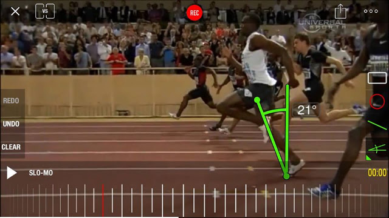

無用之用，是為大用
昨天有位運科碩士生來訊詢問：「您說的落下角度對跑者本身是一個無用的資訊，但如果跑者可以即時知道落下角度，或甚至只知道有無落下，是不是也可以幫助跑者運動中修正姿勢，提醒他/她們要『落下』?」他接著說：「我是 Pose Method 的愛好者，想朝這個方向研究，也想做這個工具來幫助自己。」
對於非個人性的學問討論(尤其是跟 Pose Method 有關的)我都會非常詳細的回答。尤其這又是一個很棒的問題，所以下面把我回傳的訊息分享出來：
先澄清一下「您說的落下角度對跑者本身是一個無用的資訊」→這不是我說的，是 Pose Method 的創始人羅曼諾夫博士說的。我好幾年前讀到時不懂，直到最近才懂。理由可以從兩個層面來講。
從運科層面來說：要精準計算出正確的落下角度是非常難的，首先要面對的最大問題是落下角度要如何定義，因為臀部回到支撐腳正上時的「鉛直線」並非落下角度的起點(所有書中畫的角度都只是示意圖，包括本篇文章的附圖都只是示意，在運動力學的研究上是不能直接這樣做的)，原因是如果跑者的腳掌在臀部回到支撐點正上時，如果後腳還在很後面，還沒拉回臀部下方，那重心就會在後面→注意了，如果重心在後面，就代表還沒開始落下，落下的定義是重心跑到支撐點之前，所以此時就不能當成落下的起點！
換句話說，如果臀部來到支撐腳正上方時，後腳也回到臀部正下方了，就可以直接把鉛直線當作起點。
起點還好解決，終點就更難了。落下的終點要取在哪？也就是說第二條線要怎麼畫，是腳掌離地的瞬間嗎？所謂的瞬間是指完全離地，還是腳跟離地就可以……這點我問過博士，視覺上可以把騰空腳的腳掌通過支撐腳的膝蓋的那一刻當作落下的終點。但這只是視覺上，還是不能直接當作做研究時定義落下終點的標準。因此，博士說最精確的定義是，支撐腳下的測力板測到一倍體重的時候，即是落下的終點。(為什麼要這樣定義，這又要用另一篇文章說明了)
如此，你大概可以明白要量出正確的角度是非常困難的。當然，還是可以量得到，博士的研究就是在做這個，他已經整理出所有不同身高的跑者在不同落下角度時所能對應出的配速表。
那為什麼博士還要這樣說呢？接著從技術的知覺層面來講：因為，就算真的量測到精準的落下角度了，它也可以即時顯示在手錶上，跑者仍然無法只是透過大腦下達「落下」的指令就增加角度。因為「真正的落下角度」(如上述的定義)，是跟關鍵跑姿與拉起的技術綁在一起的，儘管你刻意想往前落下，但後腳拉得太慢、拉得時機不對或關鍵跑姿開掉了(前腳往下踩或往下跨了)，你一直想往前傾但「真正的落下角度」還是不會增加。
以上就是為何博士說「落下角度只能作為一種知識性的研究趣味，它對跑者本身是一個無用的資訊」的原因。
加速是一種技術，它是由關鍵跑姿、落下和拉起有效整合在一起的技術……想像一下，一百公尺要跑到 9 秒 58 內(世界紀錄)，以身高 195 公分，極速期所量測出來的落下角度是 21.4 度。
那不是所有 195 公分且腿長一樣的人只要一直往前傾到 21.4 度就可以跑這麼快了嗎？

對，沒錯。每一位 195 公分腿長跟博爾特一樣的人，只要能維持在 21.4 度就能跑得跟他一樣快，但並不是所有 195 公分的人都可以達到 21.4 度，為什麼？因為那是技術，是很高難度的技術。
這個技術當然需要體能與肌力的支持。但因果關係不能倒過來，很多人以為跑得快是因為無氧的體能好和最大肌力強，這並沒有錯，但體能與肌力是在「服侍」技術用的，當沒有優秀的技術時，這兩者再強也會無法跑贏比賽。身材一樣，體能與肌力甚至比博爾特還更好(這樣的人很多)，若是他沒有 21.4 度的落下知覺與其他相應的技術時(像是拉起和失重的技術)，他一樣跑不出 9 秒 58 的成績。
--
落下角度就像最大攝氧量一樣，只是拿來做研究與寫論文用的，並無法用在訓練當下。雖然看起來無用，但通常關鍵且無用的數據都是最有價值的，這就好比莊子思想中的「無用之用，是為大用」。儘管這兩個數據無法實際在訓練當下運用，但我們必須去瞭解它、認識它，才能知道跑步技術和跑步體能的真正內涵為何。